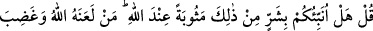
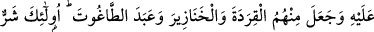
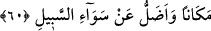

Kur’ân-ı Mecîd’e, “daha önce indirilenlere” Tevrat, İncil ve diğer ilâhî kitaplara
“inandığımız ve sizin çoğunuzun da yoldan çıkmış kimseler olduğu için mi bizden
hoşlanmıyorsunuz?” Yani çoğunuz inatçı, zikredilenlere îmandan çıkmış fâsık kimseler
olduğunuz için mi bizden hoşlanmıyorsunuz? Hattâ siz kitabımızın doğruluğunu
tasdikleyen kitabınıza îman ediyor olsaydınız Kur’ân’a inanırdınız.
Hepsi fâsık olduğu halde bu sıfatın onların çoğuna isnad edilmesi, çoğunluğun
diğerlerini de inatçılığa ve fâsıklığa sürüklemesi sebebiyledir. Sanki âyette şöyle
buyurulmaktadır: Siz bizim cihetimizden ancak Allah’a ve O’nun indirdiği bütün
kitaplara îman ettiğimiz; bizim îmana gelişimiz, sizin ise îmandan çıkmanız sebebiyle
size muhalefet ettiğimiz için hoşlanmıyorsunuz.
60. De ki: Allah katında karşılığı bundan daha kötü olanı size haber vereyim mi?
Allah’ın lanetlediği ve gazâb ettiği, aralarından maymunlar, domuzlar ve şaytana
tapanlar çıkardığı kimseler. İşte onların yeri (durumu) daha kötüdür ve doğru
yoldan daha çok sapmışlardır.
“De ki: Allah katında karşılığı bundan” hoşlanmadığınız îmandan ve mü’minlerden
“daha kötü olanı” Aslında sırf hayırdan ibaret olan fakat sizin şer talakkî ettiğinizi
değil, gerçekte şer olanı “size haber vereyim mi?” Burada hitap yahûdileredir.
Şeyhzâde şöyle der: İslâm dîninde kötülük olmadığı kesin olarak ma’lumdur. Şu
halde burada maksat, mutlak olarak fazlalıktır. “Allah’ın lanetlediği ve gazâb ettiği,
aralarından maymunlar, domuzlar ve şeytana tapanlar çıkardığı kimseler.”
“Allah’ın lanetlediği” Allah’ın lanet ettiği kimseler olan yahûdîlerin dîni demektir.
Apaçık âyetleri gördükten sonra inkâr etmeleri ve günahlarda boğulmaları sebebiyle
Allah onları rahmetinden uzaklaştırmış ve onlara gazab etmiştir.
“Allah katında karşılığı”, Allah Teâlâ’nın hükmünde sabit olan cezâsı, karşılığı
demektir. “Mesûbe” hayrın karşılığı olan mükâfâttır. “Ukûbet” ise şerrin cezâsıdır.
Âyette kâfirlerle alay için “ukûbet” yerine “mesûbet” kelimesi kullanılmıştır.
Allah Teâlâ yahûdîlerden bir kısmını cumartesi gününe saygı göstermedikleri ve o
günün hürmetini ihlal ettikleri için Dâvud (a.s.) zamanında onun bedduasıyla
maymunlara dönüştürdü. Bir kısmını da Îsâ (a.s.) devrinde Allah tarafından indirilen
sofradan (mâide) yedikten sonra ve apaçık âyetleri gördükten sonra küfre düştüklerinde
domuza çevirdi.
Bu iki tür meshin cumartesi gününü ihlal edenler hakkında gerçekleştiği; onların